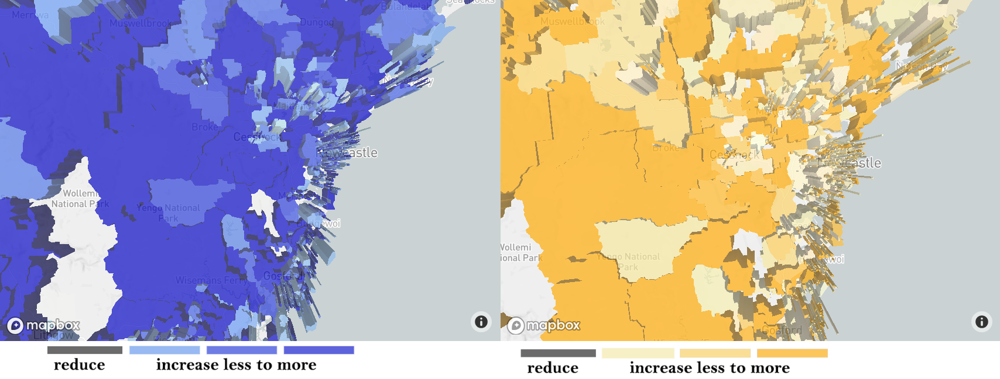

The Issue of Assignment 2
● The quality of education in the eastern coast higher than the west and northwest area.
● Women in major cities are more likely to hold qualifications of college degrees than women in regional or remote locations.
Link of Assignment 2

2016 EDUCATIONAL QUALIFICATIONS IN DIFFERENT SEX IN THE UNIVERSITY DEGREE
These two maps represent that the differences in a number of educatees in Male and Female. The left blue one is Male and the right is Female.I set of 3 universities around the area of Blackbutt Reserve, provide the focus for a range of recreational and educational pursuits,and using bridges to link with each university.These highway-bridges are also convenient for traffic, improving enthusiasm for studing in other cities for poverty-stricken area.